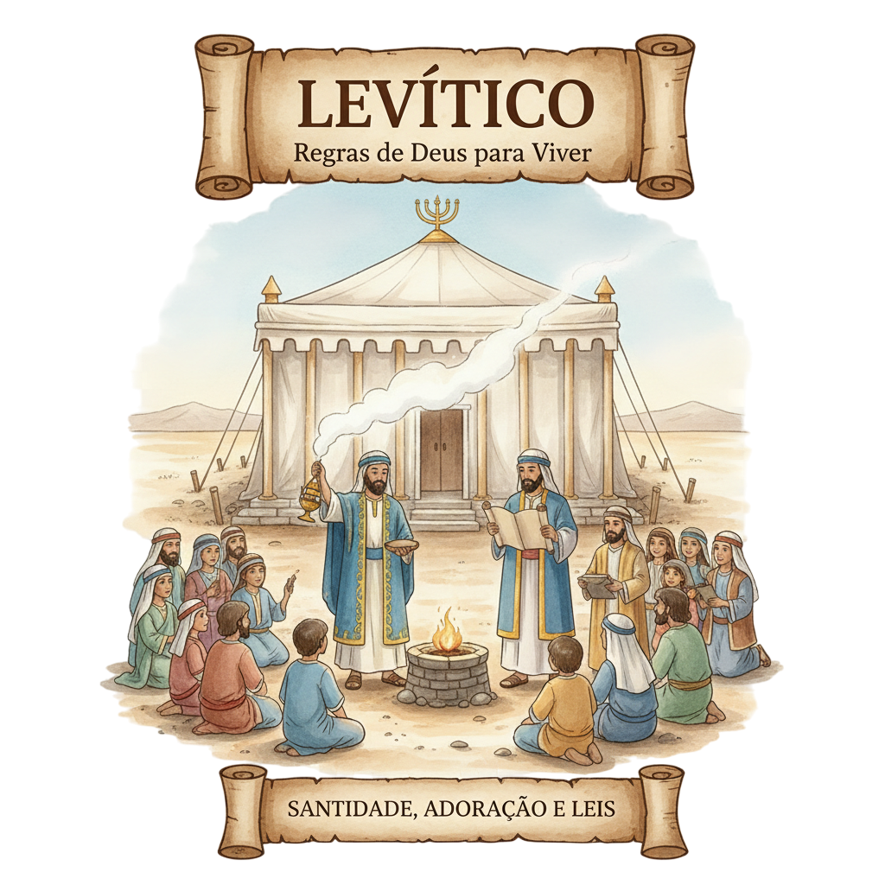
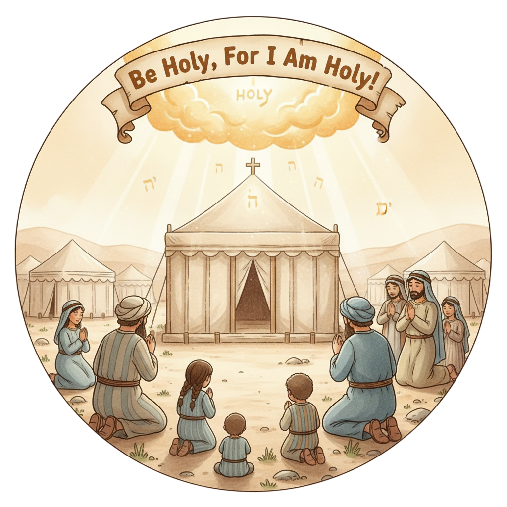
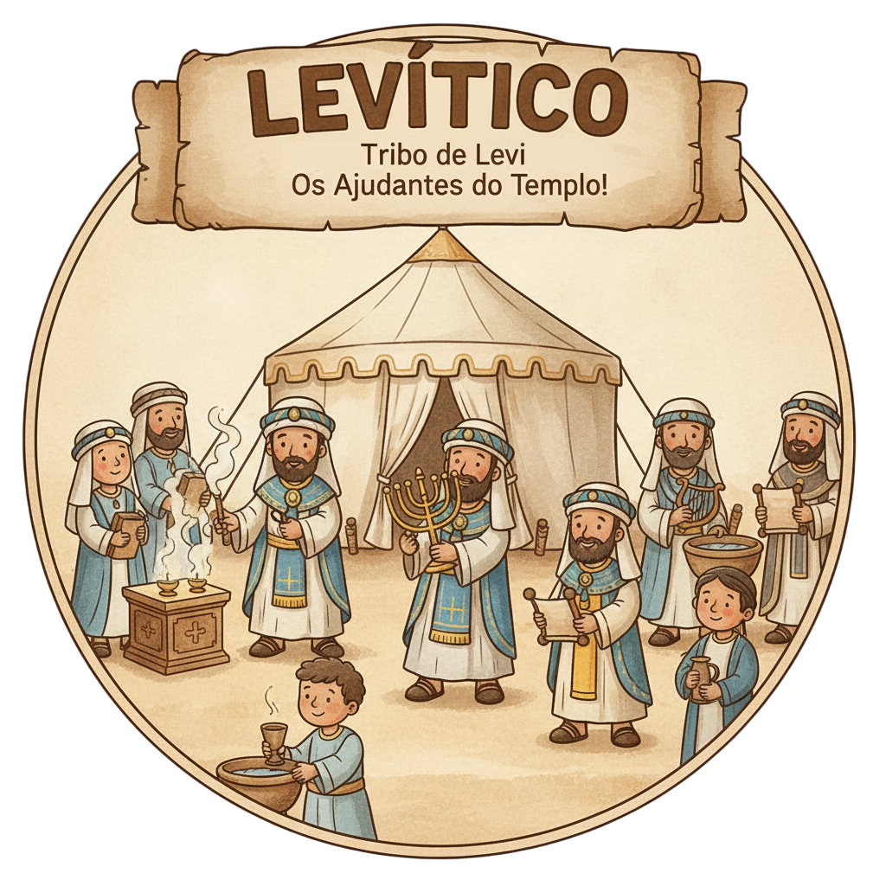

Sejam Santos Como Eu Sou Santo — Um Resumo Visual para Crianças
Deus é santo, puro e bom,
E quer que sejamos também, com amor e dom!
Ser santo é viver de forma especial,
Separado para Deus — que coisa legal!
📖 Levítico 11:45 — "Sede santos, porque eu sou santo."
Os sacrifícios mostravam algo importante,
Que o pecado tem consequência, é relevante!
O sangue do cordeiro apontava para Cristo,
O Cordeiro de Deus que nos trouxe o perdão listo!
📖 Levítico 17:11 — "A vida da carne está no sangue... para fazer expiação pelas vossas almas."
Não é só do Novo Testamento esse ensinamento,
Levítico já diz com pleno contentamento:
"Ama ao próximo como a ti mesmo é o mandamento!"
Jesus repetiu — é o maior fundamento!
📖 Levítico 19:18 — "Amarás o teu próximo como a ti mesmo."
"Amarás o teu próximo como a ti mesmo."
— Levítico 19:18
✨ O que isso significa? Este versículo tem mais de 3.000 anos — e Jesus o citou como um dos dois maiores mandamentos da Bíblia! Cuidar do próximo não é novidade do Novo Testamento. Desde Levítico, Deus já ensinava: se você se importa com você mesmo, importe-se assim também com quem está ao seu lado!
O grande protagonista! Em Levítico, Deus fala mais do que em qualquer outro livro. Cada regra começa com "E o Senhor falou a Moisés". Ele não é um deus distante — está no meio do acampamento, ensinando pessoalmente como viver!
📖 Lv 1:1 — "Chamou o Senhor a Moisés, e lhe falou da tenda da congregação."
Ele recebe todas as leis de Deus e as transmite fielmente ao povo. Em Levítico, Moisés é quase um professor — sentado no Tabernáculo, anotando tudo o que Deus ensinava!
📖 Lv 27:34 — "Estes são os mandamentos que o Senhor ordenou a Moisés."
Irmão de Moisés e primeiro sumo sacerdote de Israel. Ele entrava no Lugar Santíssimo uma vez por ano — no Dia da Expiação — para pedir perdão pelos pecados de todo o povo. Um trabalho de enorme responsabilidade!
📖 Lv 16:2 — "Fala a Arão, teu irmão, que não entre em qualquer tempo no santuário."
Os primeiros 7 capítulos ensinam cinco tipos de ofertas: holocausto, cereal, paz, pelo pecado e pela culpa. Cada uma tinha um significado — juntas mostravam que a adoração a Deus é rica, variada e cobre cada área da vida!
📖 Lv 1:9 — "Assim o sacerdote queimará tudo no altar... é oferta queimada de aroma agradável ao Senhor."
O capítulo 16 é o coração do livro! Uma vez por ano, Arão entrava no Lugar Santíssimo com o sangue de um animal para pedir perdão por todo o povo. E um segundo bode era "carregado" com os pecados e solto no deserto — daí vem a expressão "bode expiatório"!
📖 Lv 16:30 — "Neste dia se fará expiação por vós, para vos purificar de todos os vossos pecados."
Os capítulos 17–26 formam o "Código de Santidade": como tratar os pobres, os estrangeiros, os idosos; honrar os pais; ser honesto nos negócios. São leis surpreendentemente modernas — e tudo começa com "Sede santos!"
📖 Lv 19:18 — "Amarás o teu próximo como a ti mesmo. Eu sou o Senhor."
O capítulo 23 lista sete festas anuais: Páscoa, Pães Ázimos, Primícias, Pentecostes, Trombetas, Expiação e Tabernáculos. Cada festa era uma pausa para lembrar o que Deus tinha feito — celebrar faz parte da fé!
📖 Lv 23:2 — "As festas solenemente proclamadas do Senhor... são os meus tempos determinados."

Cada sacrifício em Levítico era como um ensaio para o maior ato de todos: Jesus na cruz. O Dia da Expiação, o cordeiro, o bode expiatório — tudo apontava para o Cordeiro de Deus que tira o pecado do mundo!
📖 Lv 17:11 — "A vida da carne está no sangue... para fazer expiação pelas vossas almas."
"Sede santos" não era só para os sacerdotes — era para todo o povo! Deus quer que cada pessoa — criança, adulto, rico ou pobre — viva de forma especial, separada para Ele, no dia a dia.
📖 Lv 19:2 — "Sede santos; porque eu, o Senhor vosso Deus, sou santo."
Levítico 19 mistura leis religiosas e sociais no mesmo capítulo! Deixar comida para os pobres, não mentir, não maltratar o estrangeiro — tudo isso é santidade. Tratar bem as pessoas é uma forma de adorar a Deus.
📖 Lv 19:9-10 — "Deixarás as espigas para o pobre e para o estrangeiro."
Israel acabou de sair do Egito — um povo de ex-escravos sem referência de como se relacionar com o Deus santo. Levítico é o manual: como aproximar-se, como adorar, como pedir perdão, como viver junto com Ele no acampamento.
📖 Lv 26:12 — "Andarei no meio de vós, e serei o vosso Deus, e vós sereis o meu povo."
As nações ao redor tinham costumes cruéis e imorais. Deus queria que Israel fosse diferente — um povo que cuidava dos pobres, fazia justiça, honrava a vida. Uma vitrine do caráter de Deus para o mundo!
📖 Lv 18:3 — "Não fareis o que se faz na terra do Egito... nem na terra de Canaã."
O livro de Hebreus no NT explica que todo o sistema de sacrifícios de Levítico era uma "sombra" do que Jesus faria. Levítico não é obsoleto — é o pano de fundo que faz a cruz de Cristo ganhar todo o seu significado!
📖 Lv 16:34 — "Isto vos será estatuto perpétuo para fazerdes expiação pelos filhos de Israel."

No Dia da Expiação, Arão colocava as mãos sobre um bode vivo, "transferindo" os pecados do povo para ele — e o bode era solto no deserto. Daí veio a expressão "bode expiatório" que usamos até hoje para quem é culpado pelo erro dos outros!
Quando um escriba perguntou a Jesus qual era o maior mandamento, Ele citou dois versículos. O segundo foi Levítico 19:18 — "Amarás o teu próximo como a ti mesmo"! Este versículo tem mais de 3.000 anos e continua sendo o coração da vida cristã.
Na tradição judaica, as crianças começam estudando exatamente Levítico — não Gênesis! O motivo: para conhecer a Deus, primeiro é preciso entender que Ele é santo e que quer que Seu povo seja santo também. Santidade antes de história!
Levítico diz "Sede santos como Eu sou santo." Santidade significa ser "separado para Deus". O que isso significa na prática para um estudante hoje — no que você assiste, no que fala, em como trata as pessoas?
O bode expiatório carregava os pecados do povo para longe. Jesus fez isso por nós na cruz. Como é diferente viver sabendo que seus erros já foram perdoados, em vez de ficar carregando culpa para sempre?
"Amarás o próximo como a ti mesmo" (Lv 19:18). Você se trata bem — come, descansa, cuida de você. Há alguém ao redor que merece o mesmo cuidado que você dedica a si mesmo? Quem seria?
Escreva Levítico 19:18 e leve com você. Esta semana, toda vez que alguém te irritar ou magoar, releia o versículo e pergunte: "Estou tratando essa pessoa como gostaria de ser tratado?"
Levítico 19 diz para "deixar espigas para os pobres." Escolha um ato concreto de cuidar de alguém que precisa esta semana — dividir, ajudar, defender ou incluir. Isso é santidade em ação!
Levítico mostra que o perdão de Deus é real e poderoso. Esta semana, ore confessando algo que pesa no seu coração — e receba o perdão que Jesus conquistou. Você não precisa mais carregar esse peso!
© 2025 - Trilho Kids
Desenvolvido com ❤️ para crianças